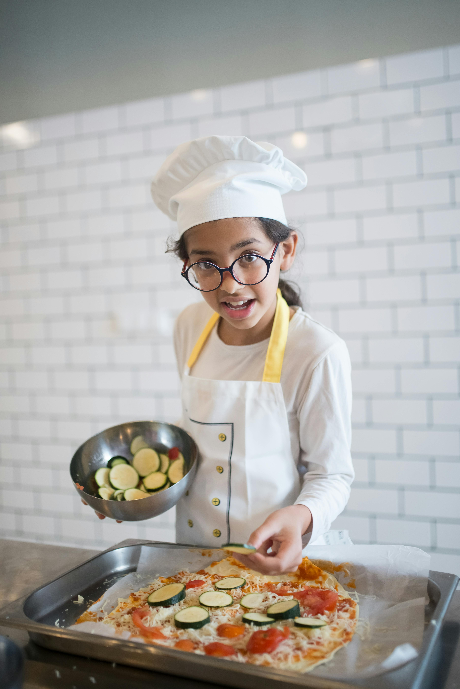
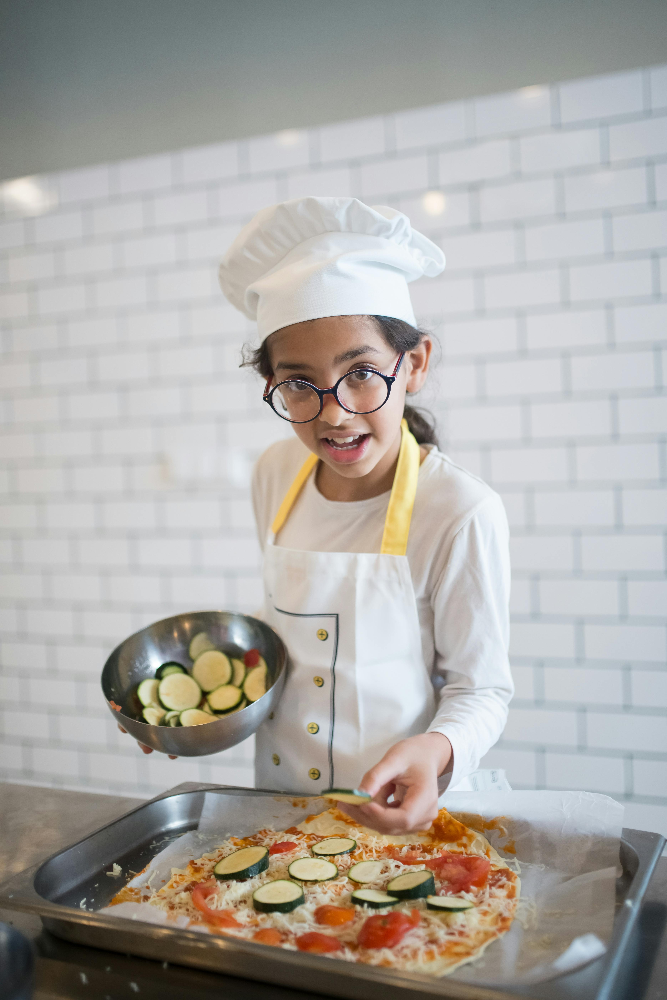

Here at Deli Kitchen cooking school we are passionate about teaching the art of cooking and helping people of all ages discover the joy of preparing delicious meals. Our school is built on the belief that cooking should be fun, creative, and something that brings people together. Whether you are just starting out in the kitchen or already have some experience, our classes are designed to guide you step by step, building confidence and skill along the way. From learning basic techniques to exploring exciting new recipes, we make sure every lesson is hands-on, engaging, and enjoyable. At Deli Kitchen cooking school, you are not just learning how to cook—you are becoming part of a community where food, friendship, and creativity come together. We invite you to join us, share your love for food, and start your journey toward becoming the chef you’ve always wanted to be!


 
